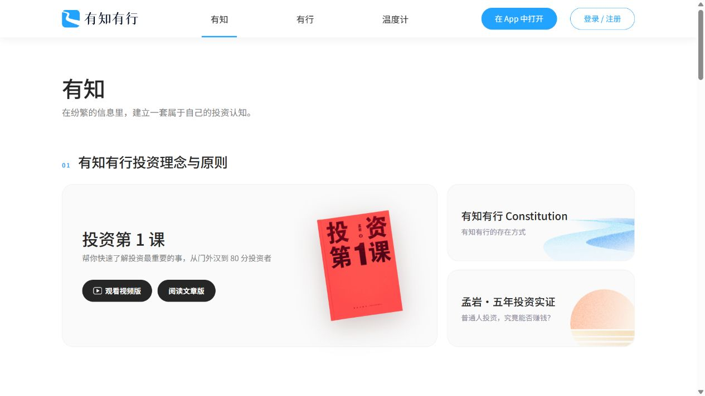
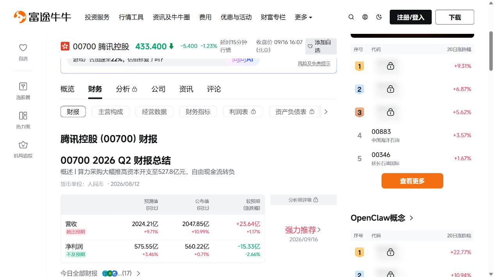
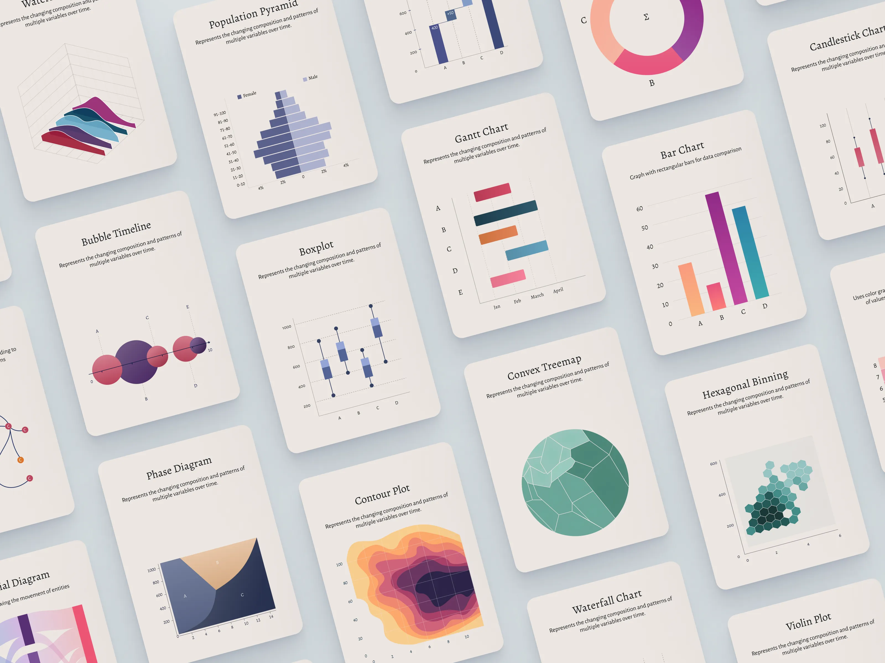
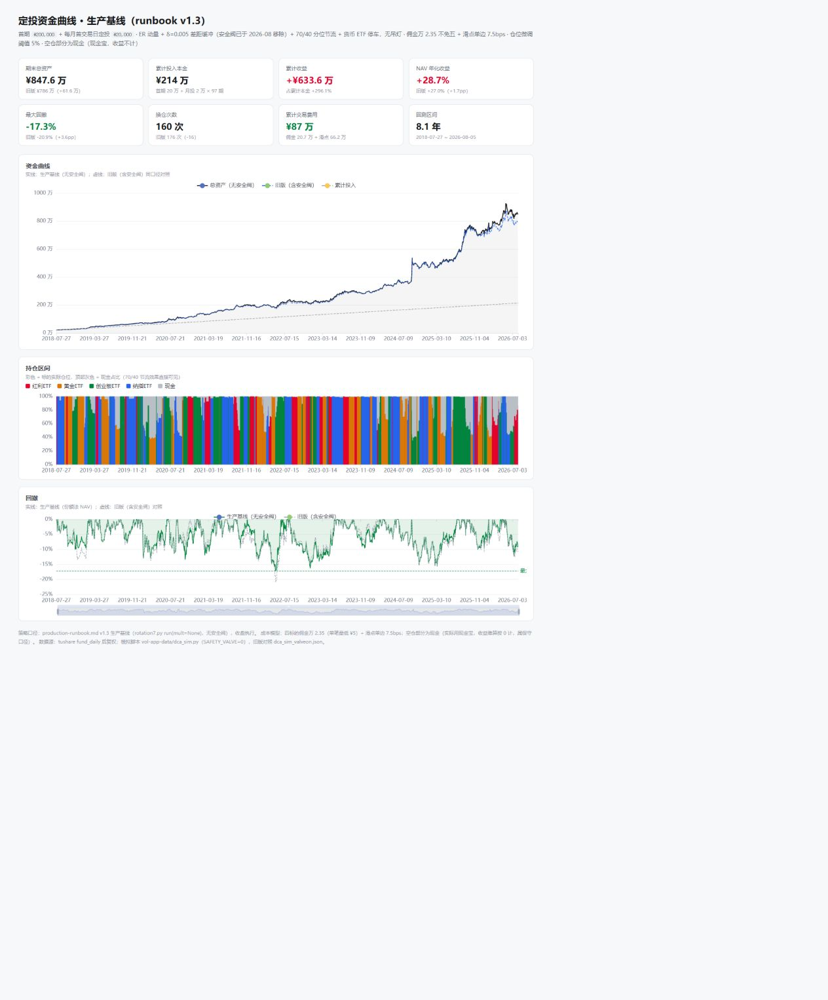

01 / 页面气质
有知有行
舒展、亲和，让首次访问者愿意读下去。
值得借鉴白底、轻灰卡片、清楚的黑色标题和少量强调色；章节与卡片有明确主次。
应用到 Candela先说明策略与四个标的，再进入图表。规则易于理解，细节有位置可查。
需要取舍保留阅读节奏，分析区适当压缩留白，给数据足够空间。
来源：用户指定页面 ↗以你选出的三个参考为主：有知有行的阅读感、富途的数据组织，以及图表卡片作品的精致表达。把它们转化成适合四 ETF 策略页的设计语言。
参考与首屏任务已确认 · 页面方案待生成与选择
舒展、亲和，让首次访问者愿意读下去。
值得借鉴白底、轻灰卡片、清楚的黑色标题和少量强调色；章节与卡片有明确主次。
应用到 Candela先说明策略与四个标的，再进入图表。规则易于理解，细节有位置可查。
需要取舍保留阅读节奏，分析区适当压缩留白，给数据足够空间。
来源：用户指定页面 ↗
信息丰富，仍能逐层找到要比较的内容。
值得借鉴概要、分区、表格与图表逐层展开；单位与日期靠近数据，局部切换明确。
应用到 Candela历史表现、持仓变化与规则分层；数值成列，图表控件靠近图表。
需要取舍保留数据比较效率，让单一主内容区更专注，去掉无关广告和热门行情侧栏。
来源：用户指定财报页 ↗ · 查看图表区
让每张图表像一张精排的研究卡片。
值得借鉴暖白卡面、柔和阴影、编辑式标题、细坐标轴与丰富但有秩序的配色。
应用到 Candela净值、持仓色带、回撤统一图例与标题；克制的背景衬托有辨识度的资产色。
需要取舍产品图表平放、尺度统一。保留纸卡质感，透视和倾斜仅属于作品展示。
作者：Rahul Hareendran · Dribbble ↗保留资金曲线、持仓区间和回撤。把密集的版本与公式说明移到可展开详情，旧版对照成为可选内容，首屏优先帮助用户理解策略和历史表现。

原页数据来自历史模拟，不是实际账户或当前市场数据。